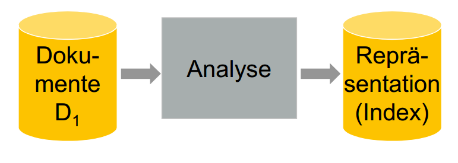
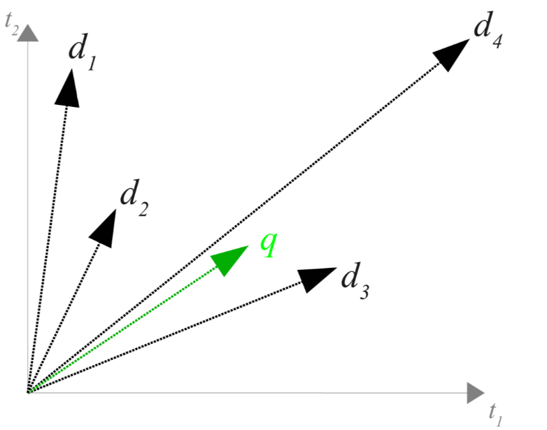
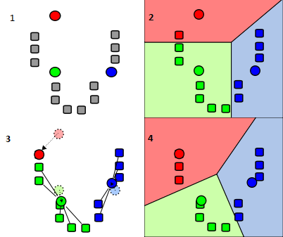

Build your own Search Engine!
Patrick Beedgen
über mich
- Bachelor an der HSMA (2009-2013)
- Bachelor Thesis über Information Retrieval
- Master in SE gerade in der Mache (auch hier)
- Erster "Solo" Workshop
orga
- 3-Tage Workshop
- Loses Programm
- Stetiger Wechsel Theorie / Praxis
Ziele
- Konzepte verstanden
- Eigene Suchmaschine entwickelt
- In der Sprache eurer Wahl
- Spass gehabt (!!)
fahrplan
- Tag 1
- IR-Prozess
- Grundlagen
- Boole'sches Retrieval
- Tag 2
- Vektorraum-Modell
- Clustering
- Erweiterte Methoden
- Wrap-Up
Disclaimer
- Der Workshop ist inkrementell aufgebaut
- Der eigenständige(!) Praxisanteil ist hoch
- Gruppenarbeit ist empfohlen
- Der Zeitplan ist lediglich eine grobe Richtlinie
- Pausen?
- Hoffen wir mal, dass es klappt... ;)
Fragen?
Wie funktionieren Suchmaschinen?
- Speichern Informationen
- Nehmen Anfragen entgegen
- Liefern Ergebnisse möglichst ähnlich zur Anfrage
- Wie kommen nun Informationen in die Suchmaschine?
- Und in welcher Form?
-
Information Retrieval
Der IR Prozess
Dokumente
- Atomare Elemente in einem IR-System
- Das "Wissen" in unserer Suchmaschine
- Granularität nach Wahl
- Webseiten, Texte, Kapitel, Sätze...
- Granularität sollte konsistent sein
- Ich hab' da mal was vorbereitet...
Analyse & Repräsentation
- (Text-)Dokumente werden umgewandelt
- In ein logisch- / mathematisches Modell 
- Und in einem sog. Index gespeichert
Code?!
- Aufteilung in mehrere Klassen
- "Dokument"-Objekt zum Halten von Daten
- "Analyse"-Objekt, welches einzelne Aufbereitungsmethoden zur Verfügung stellt
- Es kommt später noch eine weitere dazu (graue Kästen)
Übung:
Wie könnte das "Dokument"-Objekt aussehen?
Analyse - 1. Säubern
- Entfernen von unnötigen Zeichen (z.B. Satzzeichen)
- Vereinheitlichung von Schreibweisen (Lowercase?, Sonderzeichen?, ...)
- Der ursprüngliche Text sollte trotzdem erhalten bleiben
Säubern - Code?!
- String in Lowercase bringen
- Whitelist / Blacklist zum Entfernen ungewollter Zeichen verwenden
- Liste von Zeichen die durch andere Zeichen ersetzt werden sollen (z.B. ä => ae)
- z.B. String.replaceAll() / String.Replace() bei Java
- Reguläre Ausdrücke (regex) sind hier hilfreich
Analyse - 2. Tokenisierung
- Zerlegen eines Dokuments in eine Menge/Liste aus Wörtern
- Nach diesen Begriffen sucht letztendlich unsere Suchmaschine
- Aus "Hallo schöne Welt" wird [hallo, schoene, welt]
Tokenisierung - Code?!
- In Java gibt es String.split(), welches euch einen String in eine Liste aus Strings zerlegt
- Andere Sprachen (C#,JavaScript, Python) kennen dieses Konzept auch
- Als Datentyp empfiehlt sich etwas mengenbasiertes (z.B HashSet
)
Analyse - 3. Reduktion
Dokument 1:
"Ich wohne in einem schönen roten Haus"
"Ich wohne in einem schönen roten Haus"
Dokument 2:
"Wir besuchten alte rote Häuser"
"Wir besuchten alte rote Häuser"
- Suchanfrage: "rotes Haus"
- Ergebnis?
Reduktion
Dokument 1':
"Ich wohnen in ein schön rot Haus"
"Ich wohnen in ein schön rot Haus"
Dokument 2':
"Wir besuchen alt rot Haus"
"Wir besuchen alt rot Haus"
- Suchanfrage: "rotes Haus" [rot haus]
- Ergebnis?
Reduktion - Stemming
- Algorithmus der Wörter
automatisch umwandelt - Umgewandelte Wörter können
eigenartig aussehen - Porter-Stemmer
- Nachteil: Nicht immer 100%ig genau
Reduktion - Lemmatisierung
- Kein Algorithmus
- Es wird ein einfaches "Wörterbuch" benutzt
- Ist ein Wort vorhanden wird es auf die
Stammform reduziert die hinterlegt ist - Beispiel
- Nachteil: Unbekannte Wörter werden nicht reduziert
Analyse - 4. Stoppwörter
- Tragen nichts zur Aussage eines Dokumentes bei
- Grammatikalischer Kleber
- Warum also behalten?
"
Ich wohne in Heidelberg und arbeite in Mannheim"
Analyse - 4. Stoppwörter
- Der, die, das, ich, du,...
- Haben einen großen Anteil an Texten
(ca 40%) - Beispiel für eine Liste von Stoppwörtern
Fragen?
Übung:
Schreibt eine Klasse, welche alle gezeigten Aufbereitungsmethoden anbietet und wendet diese auf die zur Verfügung gestellten Texte an
Analyseprozess
Bool'sches Retrieval
Bool'sches Retrieval
- Einfaches Anfragemodell
- Anfragen sind boole'sche Formeln
- Dokumente die exakt auf Anfragen passen,
werden als Ergebnis geliefert (Matching)
Beispiel
- Beispieldokumente:
- “Information Retrieval befriedigt Informationsbedürfnisse”
- “Information und Daten Retrieval
unterscheiden sich” - “Document Retrieval ist ein anderer Begriff”
- “Information ist nutzbares Wissen”
- “Daten und Wissen unterscheiden sich”
Indexieren von Dokumenten
- Wir haben nun eine Menge von Dokumenten
- Wir wollen nun boole'sche Abfragen machen
- Wie greifen wir nun darauf zu?
- Ideen?
- Lösung: Wir erstellen ein Nachschlagewerk (Index)
- In diesem Fall einen sog. invertierten Index
Quelle: Gottron,Thomas
Invertierter Index
- Key / Value Store
- "Invertieren" einer Liste von Dokumente zu einer Liste von Wörtern
- Boole'sche Verknüpfungen sind so leicht zu realisieren
Beispiel
Dokumente:
- D1 : “Information Retrieval befriedigt Informationsbedürfnisse”
- D2 : “Information und Daten Retrieval
unterscheiden sich” - D3 : “Document Retrieval ist ein anderer Begriff”
Abfragen:
- "Information" UND "Retrieval"{D1,D2}
- "Begriff" ODER "befriedigt"{D1,D3}
- "Document" UND "Information"{}
Übung:
Schreibt ein Programm, welches (boole'sche)Abfragen über die Konsole entgegennimmt und passende Dokumente wieder ausgibt.
Tag 2
- Vektorraum-Modell
- Clustering
- Erweiterte Methoden
- Wrap-Up
Vektorraum Modell
Kritik an boole'schem Retrieval
- Boole'sches Retrieval irgendwie unzureichend
- Abfragen formulieren umständlich
- Nur exakte Treffer werden gefunden
- Was ist mit "ähnlichen" Treffern?
Idee!
- Die Repräsentation eines Dokuments ist nun nicht mehr eine Liste...
- ...sondern ein Vektor!
- Jedes Wort ist eine "Dimension" des Vektors
- Die Zahl in der Dimension ist die Anzahl des Wortes im Dokument
- Vektorraum-Modell anyone?
Beispiel
Dokument 1:
Ich habe ein Haus, ein kunterbuntes Haus ein Äffchen und ein Pferd, die schauen dort zum Fenster raus.Dokumentenvektor 1:
{"haben":1, "haus":2, "kunterbunt":1, "aeffchen":1, "pferd":1, "schauen":1, "fenster":1}Dokument 2:
Wie ein Polizist sagte, deutete ein zerstörtes Fenster darauf hin, dass das mehrgeschossige Haus unbefugt benutzt werden könnte.Dokumentenvektor 2:
{"polizist": 1, "deuten":1, zerstoert":1, "fenster":1, "mehrgeschossig":1, "haus":1, "unbefugt":1, "benutzen":1}Und wie hilft uns das nun?
Dokumentenvektoren
Ähnlichkeitsmaße
Übung
1. Verändert euren Code so, dass er Dokumentenvektoren erzeugt
2. Implementiert die Distanz- ODER Winkelmethode um zwei Dokumente miteinander zu vergleichen
3. Verändert euren Abfragecode so, dass eingehende Abfragen in Vektoren umgewandelt werden und mit eurer Wissensbasis verglichen werden
4. Sortiert die Ergebnismenge nach Ähnlichkeit
Clustering
Clustering
- Von Data Mining "ausgeliehen"
- Entdecken von "Ballungen" in Datensätzen
- Einfacher Algorithmus: k-Means
- Dem Algorithmus werden die Datensätze übergeben und ein Parameter "k"
- k = Anzahl der (vermuteten) Cluster
k-Means
Mehr Infos
k-Means - Probleme
- "Raten" wie viele Cluster es gibt
- Startpunkt der Clusterzentren beeinflusst das Verfahren
- Besser: DBSCAN
- Vorsicht Generell sind diese Verfahren sehr aufwändig in der Berechnung
Erweiterte Methoden
Inverse Dokumentfrequenz
- Nicht jedes Wort ist gleich "wichtig"
- Bestimmte Wörter kommen häufiger / seltener vor als andere
- Waraum also die Verteilung von Dokumenten nicht als Bewertungsgrundlage verwenden?
- Inverse Dokumentfrequenz: "Je seltener ein Wort in meiner Wissensbasis vorkommt umso eindeutiger identifiziert es mein Dokument"
- Berechnung
Korrekturverfahren
- Was machen mit falsch geschriebenen Wörtern?
- Oder ähnlich klingenden Wörtern?
- Oder wenn ich die genaue Rechtschreibung nicht kenne?
- Welche Möglichkeiten dem Nutzer entgegen zu kommen gibt es?
Ähnlicher Klang - Kölner Phonetik
- Meyer, Meier, Mayer, Meyr?
- Wörter werden in einen Zahlencode umgewandelt
- Anhand phonetischer Regeln
- Wikipedia
Rechtschreibung - Levenshtein Distanz
- Fehler kommen immer vor
- Auch in der Rechtschreibung
- Wie damit in einer Suchmaschine umgehen?
- Ansatz: Ich rechne die "Distanz" zu bekannten Wörtern aus und nehme die geringste
- Distanz = Wie oft muss ich zeichen austauschen / entfernen / hinzufügen?

Wrap Up
Feedback
- Habt ihr was gelernt?
- Menge angemessen?
- Was hätte ich besser machen können?
- Interesse am Thema geweckt?
- Hattet ihr Spass?